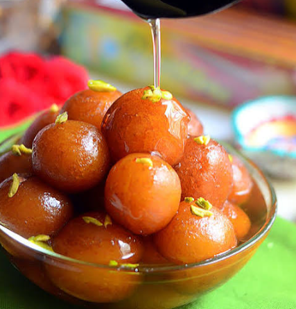

Gulab Jamun
Ingredients:-

- 1 cup milk powder
- ¼ cup all-purpose flour (maida)
- 2 tablespoons ghee
- ¼ cup milk
- ½ teaspoon baking soda
- Oil or ghee for deep frying
- 1½ cups sugar
- 1½ cups water
- 3–4 cardamom pods
- 1 teaspoon rose water (optional)
- A few saffron strands (optional)
Procedure
- Prepare the sugar syrup: Add sugar and water to a pan and boil until the sugar completely dissolves. Add cardamom and rose water. Keep the syrup warm.
- Prepare the dough: Mix milk powder, maida, and baking soda in a bowl. Add ghee and mix well. Gradually add milk and gently combine to make a soft dough.
- Make the balls: Grease your hands and make small, smooth balls without cracks.
- Deep fry: Heat oil or ghee on low-medium heat. Fry the balls slowly until they become golden brown.
- Soak: Remove the fried gulab jamuns and immediately place them in the warm sugar syrup.
- Let them soak for 2–3 hours so they become soft and juicy.
- Serve: Serve warm or chilled, optionally garnished with pistachios or almonds.
Biriyani
Ingredients:-
For the Chicken
- 500 g chicken
- ½ cup curd
- 1 tablespoon ginger-garlic paste
- 1 teaspoon red chilli powder
- ½ teaspoon turmeric powder
- 1 teaspoon garam masala
- 1 tablespoon lemon juice
- Salt to taste
- 2 tablespoons oil
For the Rice
- 2 cups basmati rice
- 4 cups water
- 2–3 cardamom pods
- 1 cinnamon stick
- 2–3 cloves
- 1 bay leaf
- Salt to taste
For the Biryani
- 2 large onions, sliced
- 2 tomatoes, chopped
- 2–3 green chillies
- ½ cup coriander leaves
- ½ cup mint leaves
- 2 tablespoons ghee
- A few saffron strands (optional)
👨🍳 Procedure
- Prepare the sugar syrup: Add sugar and water to a pan and boil until the sugar completely dissolves. Add cardamom and rose water. Keep the syrup warm.
- Prepare the dough: Mix milk powder, maida, and baking soda in a bowl. Add ghee and mix well. Gradually add milk and gently combine to make a soft dough.
- Make the balls: Grease your hands and make small, smooth balls without cracks.
- Deep fry: Heat oil or ghee on low-medium heat. Fry the balls slowly until they become golden brown.
- Soak: Remove the fried gulab jamuns and immediately place them in the warm sugar syrup.
- Let them soak for 2–3 hours so they become soft and juicy.
- Serve: Serve warm or chilled, optionally garnished with pistachios or almonds.
Gobi
Ingredients
- 1 medium cauliflower (gobi)
- ½ cup all-purpose flour (maida)
- ¼ cup corn flour
- 1 teaspoon ginger-garlic paste
- 1 teaspoon red chilli powder
- Salt to taste
- Water as needed
- Oil for deep frying
- 1 tablespoon oil
- 1 onion, chopped
- 1 capsicum, chopped
- 2 green chillies, chopped
- 1 tablespoon soy sauce
- 1 tablespoon tomato ketchup
- 1 teaspoon chilli sauce
- 1 teaspoon vinegar
- 2 tablespoons spring onions
👨🍳 Procedure
- Prepare the gobi: Cut the cauliflower into small florets and wash them thoroughly. Boil water with a little salt and blanch the gobi for 2–3 minutes. Drain well.
- Prepare the batter: Mix maida, corn flour, red chilli powder, ginger-garlic paste, and salt. Add water and make a medium-thick batter.
- Dip the gobi florets into the batter and coat them evenly.
- Deep fry: Heat oil and fry the coated gobi until crispy and golden brown. Remove and keep aside.
- Prepare the sauce: Heat 1 tablespoon oil in a pan. Add onion, capsicum, and green chillies. Stir-fry for 2–3 minutes.
- Add soy sauce, tomato ketchup, chilli sauce, and vinegar. Mix well.
- Add the fried gobi and toss everything together until well coated.
- Garnish: Garnish with spring onions and serve hot.